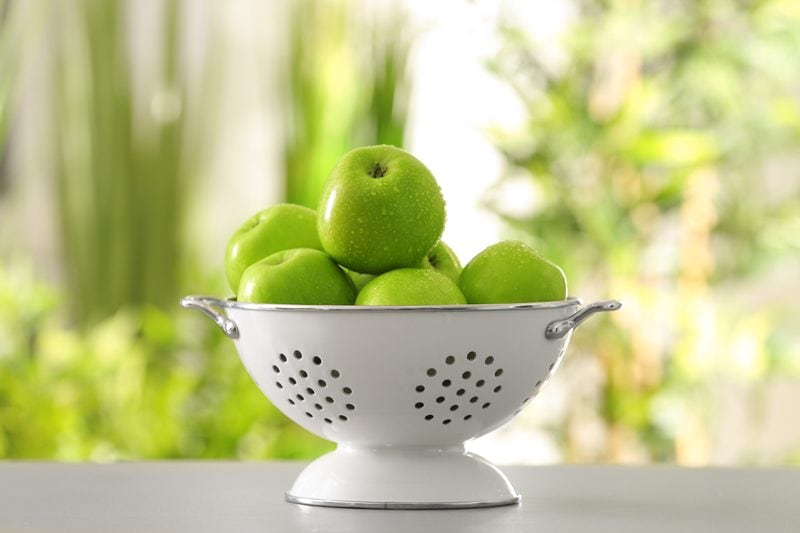
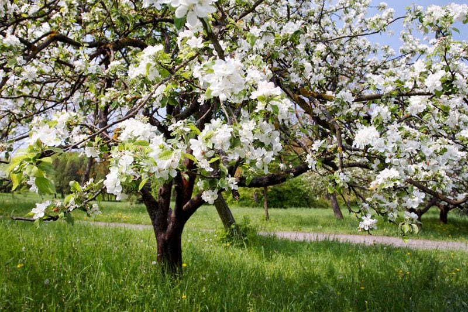
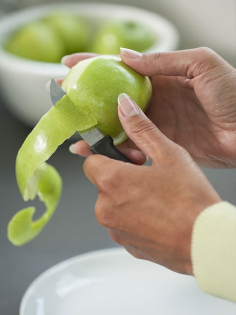

Apples – An Apple a Day
Oh for the love of apples. There is something quite refreshing about the sound of biting into a firm apple. There ought to be a noticeable audible crunchy sound as your teeth glide through the crisp, creamy-white flesh. Did you happen to know that there are 2,500 varieties of apples are grown in the United States… 7,500 varieties of apples are grown throughout the world??? Well, shiver me timbers. Why is it that I typically only eat about eight varieties? I need to expand my horizons.

Pollination
I am here to explain the birds and the bees (pun intended) of pollination. Pollination is the transfer of pollen grains, the male sex cells of a flower, from the anther where they are produced to the receptive surface, or stigma, of the female organ of a flower. Seems quite simple right?
The apple tree’s ability to cross-pollinate is important. They greatly benefit from cross-pollination which means they need another tree to produce fruit. Trees of the same variety will not cross-pollinate, so it is common to see multiple trees of different varieties planted together to help increase the amount of fruit the tree bears every year. Keep in mind, in order to have pollination you have to have blossoms.
In come the honey bees. They are also an important part of the pollination process. Since Bob and I have become orchardists, I have come to develop a whole new appreciation for bees. They are good pollinators for many reasons. Their hairy bodies trap pollen and carry it between flowers. The bees require large quantities of nectar and pollen to rear their young, and they visit flowers regularly in large numbers to obtain these foods.
Harvesting
Just like any other fruit or vegetable, harvesting apples at just the right time is key, it ensures the highest quality fruit and maximizes the storage life. Each variety of apple has its own maturation time and can be dependent upon weather conditions during the growing season. If you run out of patience and prematurely pick an apple, you will be left with a fruit that is sour, starchy, and generally unpalatable. Wait too long, and it will result in a soft and mushy fruit. There is always that “sweet spot” isn’t there?
Apples are hand-picked. To do so, gently remove the apples from the tree, keeping the stem intact. Once done collecting the apple, be sure to separate any damaged ones because apples emit ethylene gas, which hastens ripening. Damaged apples give off ethylene more quickly and can literally cause a batch to spoil. You may also want to keep some distance between stored apples and other produce, as the ethylene gas will accelerate the ripening of other fruits and vegetables. Did you know that apples stored in commercial refrigerated storage will keep for four to six months and long-term storage for up to twelve months? Makes you look at that apple in the grocery store a little bit differently, doesn’t it?

Uses of the Whole Apple Tree
The Apple Itself
- An apple tree’s fruit, cooked or raw, can be made into dozens of food and beverages, such as apple juice, apple pie, pudding, pastry, dumplings, apple cider, apple wine, butter, applesauce, preserves, and candy.
- Roasted, spiced apples are a favorite Christmastime treat. Crab apples are popular with jelly and jam makers.
Apple Tree Wood
- Apple tree wood is used to make applewood chips for the barbecue, using the limbs, twigs or stump. These wood chips penetrate food during grilling to give them a rich, smoky flavor with a hint of sweetness.
- Mix applewood chips into the soil as a nutrient-rich feeder for your garden.
- Applewood chips can be used as a mulch as well.
- You can line your pathways or garden borders with applewood chips for aesthetic value.
- Large pieces of wood from the apple tree are used to create furniture or accents on existing furniture, such as tables, decorative handles, cabinet doors, dishware (applewood is dense and durable), chairs, bars, and mirror frames.
In a Raw Recipe Application
- Apples are wonderful all on their own but when dehydrated they turn into a sweet, preserved treat, that can be enjoyed year round.
- Apples can be blended into recipe giving it a natural sweetness.
- You can blend them into a puree and dehydrate them into fruit leather.

Should I Peel my Apples?
Quickly, I respond, “Heck no!” Two-thirds of the fiber and lots of antioxidants are found in the peel. Antioxidants help to reduce damage to cells, which can trigger some diseases. BUT if you are eating conventionally grown apples, then I would recommend peeling them. This will reduce the number of pesticides you take into your body.
As I mentioned above, there are 7,500 different types of apples in the world, but due to time (cough), I am only going to touch base on a few. Haha, I am sure you can understand.
Ambrosia
- A sweet modern apple variety, originating from western Canada, quite similar to Golden Delicious.
- The flavor is pleasant and sweet.
- It is a crisp apple, with a softer crunch than a Braeburn.
- Ambrosia is an excellent eating apple.
- It benefits from being chilled and eaten from the fridge.
Braeburn
- Like Fuji, this is a sweet apple that is best eaten out of hand.
- It is an all-purpose apple and makes a decent pie.
- It has tender, fragrant skin, which smells like just-pressed cider.
Cameo
- It is a great dessert apple, perfect alone or with vegan cheese.
Cortland
- The Cortland apple is a cross between the McIntosh and Ben Davis variety.
- Its flavor is sweet compared to McIntosh.
- They have a white flesh that is resistant to browning making them especially good for salads.
- Cortland is also an excellent dessert apple. This apple also makes delicious applesauce.
Fuji
- A big, red apple with golden highlights. It is a bold and flavorful apple.
- It keeps better than any other sweet apple.
- It can spend a few weeks in a fruit bowl without turning mushy.
- You can get good results by cooking or baking with it, but it is best eaten raw and is delicious in salads.
Gala
- A perfect apple for snacking!
- It is crisp, fragrant, and juicy.
- It loses its fragrance when cooked, can become slightly rubbery in the oven when baked. So don’t try to bake with it.
- Save it for salads where its bright flavor is accentuated in the presence of vinaigrette, cheese, and nuts.
Golden Delicious
- Golden Delicious can be described as a soft and perfumey American blond.
- It is uncommonly versatile and flavorful.
- It makes great applesauce, and bakes well too – just be aware that it becomes soft very quickly.
- It is also a wonderful snacking apple!
Granny Smith
- It is a good baking apple with a refreshing tartness. This tartness makes it especially useful in savory dishes where its firm texture stands up to grilling and pan-searing.
- Granny Smith is often a choice for baking, though it is slow to soften when baked.
- Personally, I eat them raw with a bit of sea salt.
Honeycrisp
- Honeycrisp apples are considered by many to be the greatest fresh eating apple of all time.
- It is very crisp and has a sweetness that really is reminiscent of honey.
- Honeycrisp apples also make great applesauce!
Jonagold
- This is an excellent apple! Intensely flavorful, colorful, and a wonderful all-purpose apple.
- It has a short season so buy it when you see it. It comes out by the first of October and by Thanksgiving it’s likely to have vanished.
- They are great for baking and just plain eating.
Red Delicious
- They stand up to cooking and are ideal for snacking.
- These apples are available year-round and still accounts for 80% of all apples grown in Washington.
- It is very good in salads.
© AmieSue.com